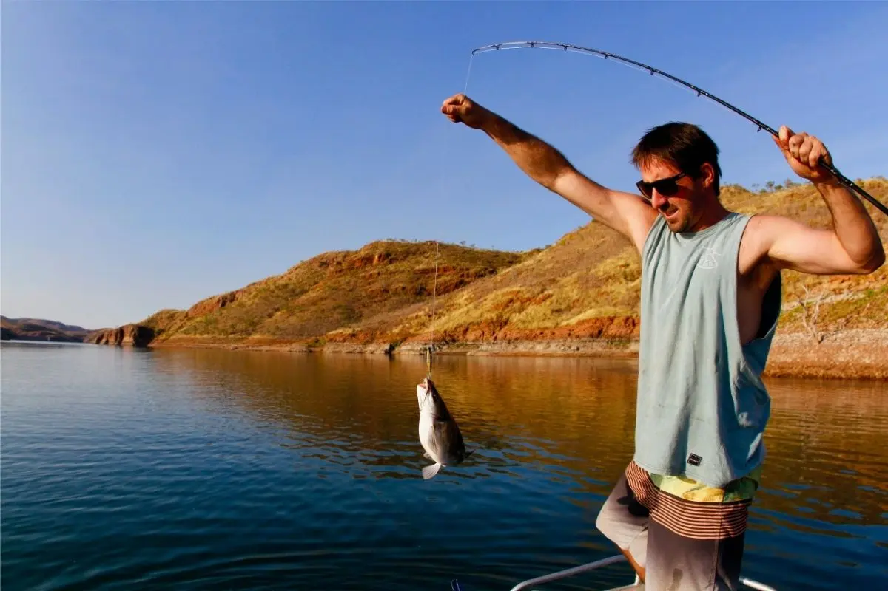

Teknik Bilgi Neden Önemli?
Doğru ekipmana sahip olmak yeterli değildir — onu nasıl kullandığın sonucu belirler. LRF'de başarı, sabır, gözlem ve doğru tekniğin bir araya gelmesiyle gelir. Bu rehberde en temel teknikleri adım adım öğreneceksin.
Atış Teknikleri
LRF'de atış tekniği, hem mesafeyi hem de hassasiyeti doğrudan etkiler. Overhead (tepeden) atış en yaygın yöntemdir; ancak dar alanlarda side cast (yandan atış) daha pratiktir.
-
1Oltayı dominant elinle tut, maket suyun 20–30 cm üzerinde salsın.
-
2Parmağınla misina tut, bail'i aç ve hedefi gözle.
-
3Oltayı geriye al, öne doğru hızlı bir hareketle fırlat ve hedef noktasında parmağını bırak.
-
4Maket suya değdiğinde bail'i kapat ve misina gerginliğini hisset.
Çekiş (Retrieve) Teknikleri
Maketi suya attıktan sonra nasıl çektiğin, balığın onu avlanmaya değer görüp görmeyeceğini belirler. Farklı çekiş teknikleri farklı balık türlerini ve koşulları hedefler.
-
1Düz çekiş (steady retrieve): Sabit hızda sarım. Yüzey yakını veya orta su için idealdir.
-
2Stop & Go: Birkaç tur sar, dur, tekrar sar. Durma anında çoğu atış gerçekleşir.
-
3Jigging: Olta ucunu yukarı çek, aşağı bırak, sarım yap. Dip balıkları için etkilidir.
-
4Twitch & Pause: Kısa, sert bilek hareketleriyle makete düzensiz hareket ver.
Doğru Nokta Seçimi
LRF balıkları genellikle yapısal noktalarda — kayalıklar, iskeleler, rıhtımlar, yosunlu alanlar ve akıntı kırıkları — bulunur. Doğru noktayı bulmak, teknik kadar önemlidir.
-
1Kayalık ve taşlık dipli alanlar: Kaya balığı, istavrit ve lahoz için ideal.
-
2İskele ve rıhtım ayakları: Gölge ve yapı, küçük balıkları çeker.
-
3Yosunlu ve algli alanlar: Küçük balıkların beslenme alanı — LRF için altın bölge.
-
4Akıntı kırıkları: Akıntının yavaşladığı noktalarda balıklar avlanmak için bekler.

Balık Davranışları
LRF'de avlanan balıkların davranışlarını anlamak, doğru teknik ve maket seçimini kolaylaştırır. Su sıcaklığı, mevsim ve hava koşulları balık aktivitesini doğrudan etkiler.
-
1Su sıcaklığı 18–24°C arasında olduğunda balıklar en aktif dönemdedir.
-
2Rüzgarlı havalarda balıklar kıyıya yaklaşır — bu günler avantajlıdır.
-
3Ay takvimine dikkat et: Dolunay dönemlerinde gece beslenme aktivitesi artar.
-
4Balık vurduğunda paniklemeden sakin bir şekilde fren ayarını kullan ve yorgunlaştır.
LRF ile Avlanan Balıklar
Türkiye kıyılarında LRF ile en sık karşılaşılan türler.
Kaya Balığı (Scorpionfish)
- Kayalık dipli alanlar
- Yıl boyu
- Zorluk: Kolay
İstavrit (Horse Mackerel)
- Açık su, yüzey yakını
- İlkbahar-Sonbahar
- Zorluk: Kolay
Lahoz (Wrasse)
- Yosunlu, kayalık alanlar
- Yaz-Sonbahar
- Zorluk: Orta
Çipura (Sea Bream)
- Karma yapılar, kumlu dip
- İlkbahar-Sonbahar
- Zorluk: Zor
Lüfer (Bluefish)
- Açık su, akıntılı bölgeler
- Sonbahar
- Zorluk: Orta
Barbun (Red Mullet)
- Kumlu ve çakıllı dip
- Yaz
- Zorluk: Orta
Eşkina (Stonebass)
- Kayalık gölgeler, derin taş altları
- Dört mevsim (Gece avı)
- Zorluk: Zor
Levrek (Sea Bass)
- Sığ sular, köpüklü ve dalgalı sahiller
- Sonbahar-Kış (Fırtınalı havalar)
- Zorluk: Zor
Aksiyonları Çözdün, Şimdi Şov Zamanı!
Uzmanlık Rehberi ile sınırları zorla. LRF Akademi ile teorik bilgini derinleştir.